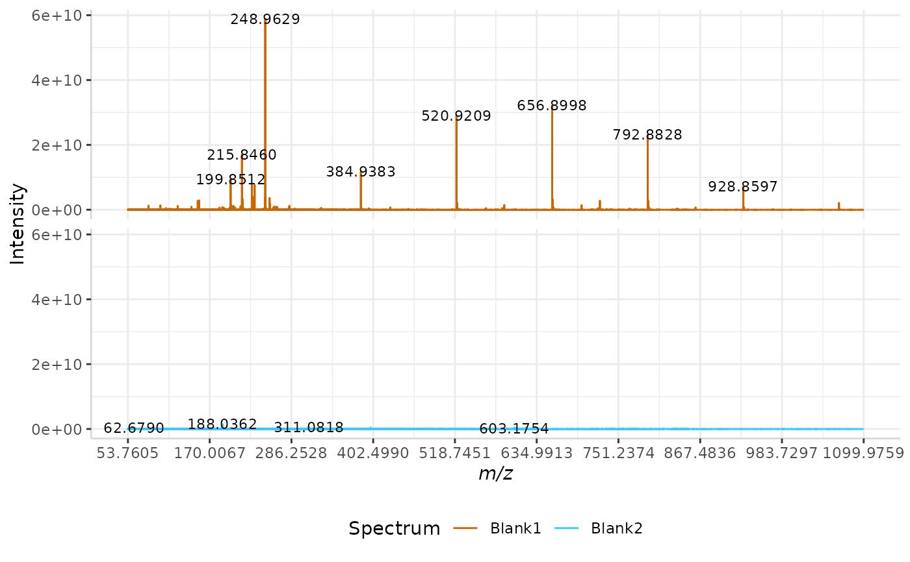

plotSpectra.RdPlot single or multiple spectra. For multiple spectra, a grid layout can be called using 'nrows'.
plotSpectra( dat, mass_dat, spectra_cols, palette = NULL, colours = colorRampPalette(c("#cc6600", "#33ccff"))(length(spectra_cols)), span = 5, thresh = 0.1, lbls = FALSE, lbl.fmt = "%3.4f", min_mz = 0, max_mz = max(dat[[mass_dat]]), min_I = 0, max_I = max(dat[spectra_cols]), x_ticks = 100, nrows = ceiling(length(spectra_cols)/2), intensity_scale = "free_y" )
| dat | The name of the spectral data frame, containing the m/z data in the first column. |
|---|---|
| mass_dat | A character string; the name of the column in |
| spectra_cols | A character string; the name(s) of the column(s) in |
| palette | A character element; the RColorBrewer palette to use. See below for available palettes. |
| colours | A character string indicating the desired colour(s) |
| span | Single numeric value; the span of peak maxima in between each label. Default = 5 (ignores two peak maxima on either side of each label). |
| thresh | Single numeric value (0-100); the threshold of peak intensities which should be labeled. |
| lbls | Logical. If |
| lbl.fmt | Character string in the format "%a.bf", where a is the number of figures displayed to the left of decimal places in labels, and b is the number of figures displayed to the right of decimal places in labels. Default = "%3.4f". |
| min_mz | Single numeric value; minimum m/z value of the observed range. |
| max_mz | Single numeric value; upper end of m/z range observed in spectra. |
| min_I | Single numeric value; minimum intensity value of the observed range. |
| max_I | Single numeric value; upper end of the intensity range observed in spectra. |
| x_ticks | Single numeric value; the number of ticks on the x-axis. |
| nrows | Single integer value; the number of rows in plot arrangement. |
| intensity_scale | A character string; the method that should be used
for determining the y-axis scales for each spectrum. If |
Returns a line plot of the input spectra.
https://github.com/wesleyburr/subMaldi
Kristen Yeh <kristenyeh@trentu.ca> Wesley Burr <wburr@trentu.ca> Sophie Castel <sophie.castel@ontariotechu.net>
## Plotting using the sample dataset "Master.rda" data("Master") plotSpectra(dat = Master, mass_dat = "full_mz", spectra_cols = c("Blank1", "Blank2"), intensity_scale = "free_y", lbls = TRUE, nrows = 2, x_ticks = 10)